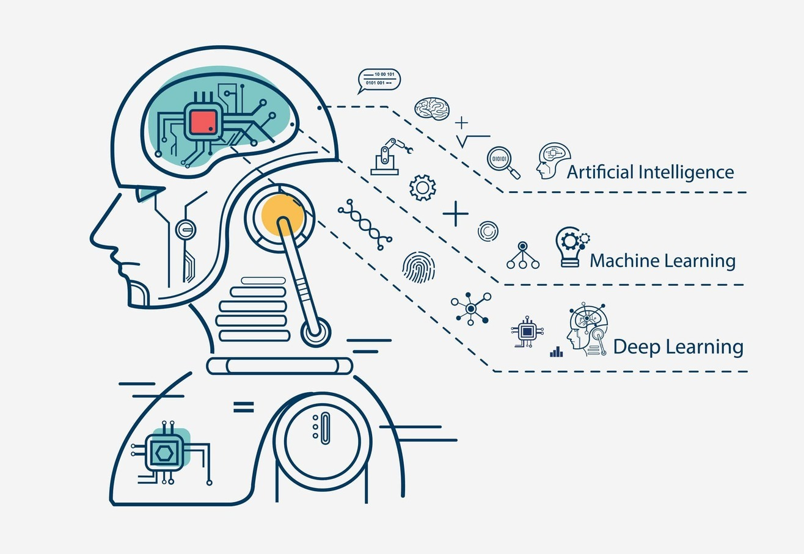

El aprendizaje automático es una rama de la IA que permite a los sistemas aprender y mejorar a partir de la experiencia sin ser programados explícitamente.
Ejemplo de aplicación: Sistemas de recomendación en plataformas de streaming, como Netflix, que sugieren películas y series basadas en tus preferencias.

El procesamiento del lenguaje natural permite a las máquinas entender, interpretar y responder al lenguaje humano de manera significativa.
Ejemplo de aplicación: Asistentes virtuales como Siri y Alexa que pueden interactuar con los usuarios en lenguaje natural.
La visión por computadora se encarga de que las máquinas puedan interpretar y entender el contenido visual del mundo, utilizando imágenes y videos.
Ejemplo de aplicación: Sistemas de reconocimiento facial que se utilizan en seguridad y autenticación.